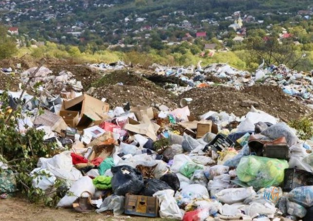

O operațiune de amploare națională zguduie astăzi lumea gestionării deșeurilor din România. Poliția Capitalei — prin Serviciul de Investigare a Criminalității Economice — desfășoară 83 de percheziții simultane în București și în 13 județe ale țării, într-un dosar care expune o adevărată rețea de fraudă organizată în domeniul colectării și decontării deșeurilor.
Județul Mehedinți se numără printre cele vizate de această amplă acțiune operativă, alături de alte județe din sudul și centrul țării.
🗂️ Date operative — Dosar mafia deșeurilor
| Data acțiunii | 24 Martie 2026 |
| Percheziții | 83 (București + 13 județe) |
| Firme vizate | 27 societăți comerciale |
| Perioada fraudei | Decembrie 2021 — Noiembrie 2025 |
| Prejudiciu estimat | Peste 237 milioane de lei |
| Instituție | DGPMB — Serviciul Criminalitate Economică |
13 județe vizate — Mehedinți, în lista anchetatorilor
Acțiunea polițienească acoperă un teritoriu vast. Județele în care se desfășoară percheziții sunt:
Prezența județului Mehedinți în acest dosar ridică semne de întrebare serioase cu privire la modul în care au fost gestionate contractele de colectare a deșeurilor în județ în ultimii ani.

Imagine simbol — gestionarea defectuoasă a deșeurilor, o problemă gravă în toată România | Foto: arhivă
Schema fraudei: cantități fictive, bani reali
Din cercetările efectuate de anchetatori a reieșit că, în perioada decembrie 2021 — noiembrie 2025, reprezentanții a 27 de societăți comerciale ar fi creat și operaționalizat circuite fictive de înregistrare a unor operațiuni privind colectarea deșeurilor.
Mecanismul fraudei este unul clasic în acest domeniu: firmele declarau că au colectat cantități mult mai mari de deșeuri decât cele reale, obținând astfel decontări nejustificate de la organizațiile de transfer — entitățile responsabile cu atingerea obiectivelor anuale de colectare, conform legislației europene în vigoare.
„Din cercetări a reieșit că, în perioada decembrie 2021 — noiembrie 2025, reprezentanții a 27 de societăți comerciale ar fi creat și operaționalizat circuite fictive de înregistrare a unor operațiuni privind colectarea deșeurilor. Prejudiciul reprezintă contribuția care ar fi trebuit achitată de către organizațiile de transfer pentru diferența dintre cantitățile de deșeuri aferente obiectivelor anuale asumate și cele efectiv colectate, raportate și valorificate de pe teritoriul României, conform legislației în vigoare." — Poliția Română
Prejudiciu de peste 237 de milioane de lei
Anchetatorii estimează că prejudiciul total depășește 237 de milioane de lei — o sumă uriașă, acumulată timp de aproape patru ani prin declararea sistematică a unor cantități fictive de deșeuri colectate.
Practic, banii care ar fi trebuit să ajungă la buget sau să finanțeze infrastructura reală de colectare a deșeurilor au ajuns în buzunarele celor 27 de firme implicate în schemă. Între timp, România a continuat să rateze obiectivele europene de reciclare — nu pentru că nu ar fi existat deșeuri de colectat, ci pentru că datele raportate erau false.
Ce urmează — rețineri și extinderea anchetei
Acțiunea de astăzi reprezintă o lovitură dată uneia dintre cele mai profitabile scheme de fraudă din România ultimilor ani. Urmează ca anchetatorii să analizeze probele ridicate în urma celor 83 de percheziții și să stabilească cu exactitate rolul fiecărei firme și al fiecărui administrator implicat.
Nu este exclusă extinderea anchetei și la alte firme sau județe, în funcție de probele descoperite. MehedintiAzi.ro urmărește evoluția acestui caz și va reveni cu informații despre persoanele reținute sau arestate din județul nostru.